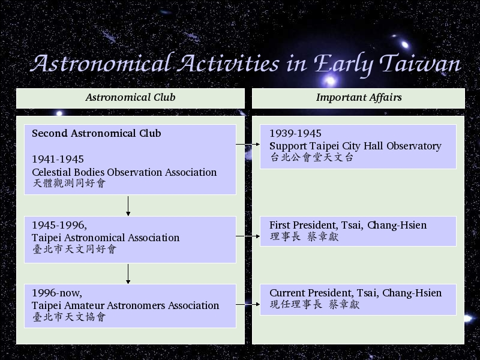

Voice Over:
The second astronomical club is Celestial Bodies Observation Association.
Almost the people belong to this association work for Taipei City Hall Observatory.
1945, it changed the name to Taipei Astronomical Association, and the first president is Tsai, Chang-Hsien.
1996. It changed the name to Taipei Amateur Astronomers Association, and the current president is Tsai, Chang-Hsien.